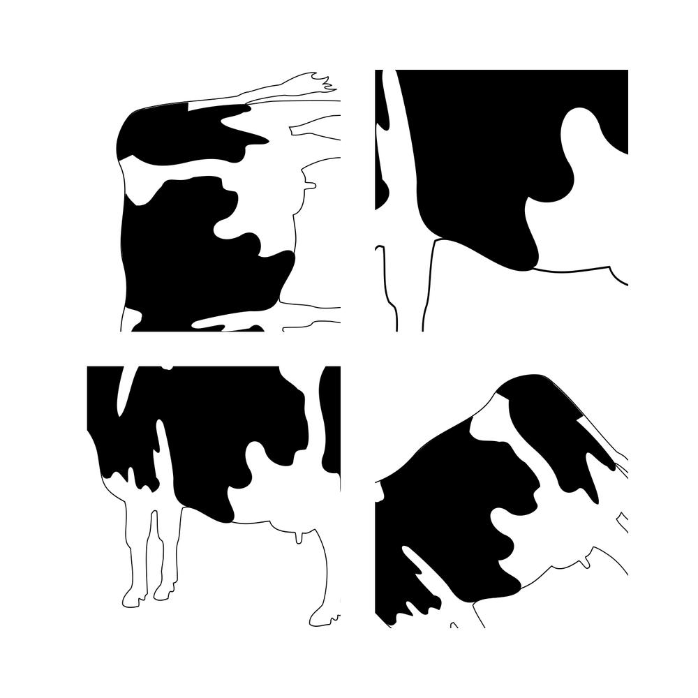

The following creates a 10x10in page with four pictures on it in a nice grid. You can change the size of the page and the image sizes will adjust as well. The images can be scaled, cropped, and moved behind the display frame. There is probably easier ways to do this, but I needed a way that would work with our web service. This captured all the parts we needed in a generic way.
-
% output=pdftex \definepapersize[imb][width=10in,height=10in] \setuppapersize[imb][imb] \setuppagenumbering[alternative=doublesided, location=] \setuplayout [backspace=1.25in, cutspace=1.0in, width=fit, topspace=.25in, bottomspace=.25in, header=1.0in, footer=1.0in, height=fit] \newdimen\spacebetween \spacebetween = 0.5in \newdimen\imagewidth \imagewidth = 6in \newdimen\imageheight \imageheight = 4.5in %my cow.jpg image was 6in x 4.5in @300dpi \useexternalfigure[imagea][cow.pdf][width=\imagewidth,height=\imageheight,frame=off] \useexternalfigure[imageb][cow.pdf][width=\imagewidth,height=\imageheight,frame=off] \useexternalfigure[imagec][cow.pdf][width=\imagewidth,height=\imageheight,frame=off] \useexternalfigure[imaged][cow.pdf][width=\imagewidth,height=\imageheight,frame=off] \starttext % slot a \newdimen\slotawidth \slotawidth = \dimexpr((\paperwidth-\innerspacewidth-\outerspacewidth-\spacebetween)/2) \newdimen\slotaheight \slotaheight = \dimexpr((\paperheight-\headerheight-\footerheight-\spacebetween)/2) \newdimen\slotatop \slotatop = \dimexpr(\headerheight) \newdimen\slotaleft \slotaleft = \dimexpr(\innerspacewidth) \newdimen\clipatop \clipatop = \dimexpr(.416666666666\imageheight)-(.5\slotaheight) \newdimen\clipaleft \clipaleft = \dimexpr(.302083333333\imagewidth)-(.5\slotawidth) % slot b \newdimen\slotbwidth \slotbwidth = \dimexpr((\paperwidth-\innerspacewidth-\outerspacewidth-\spacebetween)/2) \newdimen\slotbheight \slotbheight = \dimexpr((\paperheight-\headerheight-\footerheight-\spacebetween)/2) \newdimen\slotbtop \slotbtop = \dimexpr(\headerheight) \newdimen\slotbleft \slotbleft = \dimexpr(\innerspacewidth+\slotawidth+\spacebetween) \newdimen\clipbtop \clipbtop = \dimexpr(1.1\imageheight)-(.5\slotaheight) \newdimen\clipbleft \clipbleft = \dimexpr(1.05\imagewidth)-(.5\slotawidth) % slot c \newdimen\slotcwidth \slotcwidth = \dimexpr((\paperwidth-\innerspacewidth-\outerspacewidth-\spacebetween)/2) \newdimen\slotcheight \slotcheight = \dimexpr((\paperheight-\headerheight-\footerheight-\spacebetween)/2) \newdimen\slotctop \slotctop = \dimexpr(\headerheight+\slotaheight+\spacebetween) \newdimen\slotcleft \slotcleft = \dimexpr(\innerspacewidth) \newdimen\clipctop \clipctop = \dimexpr(.58\imageheight)-(.5\slotaheight) \newdimen\clipcleft \clipcleft = \dimexpr(.52\imagewidth)-(.5\slotawidth) % slot d \newdimen\slotdwidth \slotdwidth = \dimexpr((\paperwidth-\innerspacewidth-\outerspacewidth-\spacebetween)/2) \newdimen\slotdheight \slotdheight = \dimexpr((\paperheight-\headerheight-\footerheight-\spacebetween)/2) \newdimen\slotdtop \slotdtop = \dimexpr(\headerheight+\slotbheight+\spacebetween) \newdimen\slotdleft \slotdleft = \dimexpr(\innerspacewidth+\slotcwidth+\spacebetween) \newdimen\clipdtop \clipdtop = \dimexpr(.583333333333\imageheight)-(.5\slotdheight) \newdimen\clipdleft \clipdleft = \dimexpr(.697916666666\imagewidth)-(.5\slotdwidth) \strut \definelayer [page] [width=\paperwidth, height=\paperheight] \setupbackgrounds [page] [background=page] \setlayer [page] [voffset=\slotatop, hoffset=\slotaleft, preset=lefttop, width=\paperwidth, height=\paperheight] {\clip[voffset=\clipatop, hoffset=\clipaleft, width=\slotawidth, height=\slotaheight] {\scale[sx=1,sy=1]{\rotate[rotation=90]{\externalfigure[imagea]}}}} \setlayer [page] [voffset=\slotbtop, hoffset=\slotbleft, preset=lefttop, width=\paperwidth, height=\paperheight] {\clip[voffset=\clipbtop, hoffset=\clipbleft, width=\slotbwidth, height=\slotbheight] {\scale[sx=2,sy=2]{\rotate[rotation=0]{\externalfigure[imageb]}}}} \setlayer [page] [voffset=\slotctop, hoffset=\slotcleft, preset=lefttop, width=\paperwidth, height=\paperheight] {\clip[voffset=\clipctop, hoffset=\clipcleft, width=\slotcwidth, height=\slotcheight] {\scale[sx=1,sy=1]{\rotate[rotation=0]{\externalfigure[imagec]}}}} \setlayer [page] [voffset=\slotdtop, hoffset=\slotdleft, preset=lefttop, width=\paperwidth, height=\paperheight] {\clip[voffset=\clipdtop, hoffset=\clipdleft, width=\slotdwidth, height=\slotdheight] {\scale[sx=1,sy=1]{\rotate[rotation=35]{\externalfigure[imaged]}}}} \page \externalfigure[imaged] \stoptext
- 